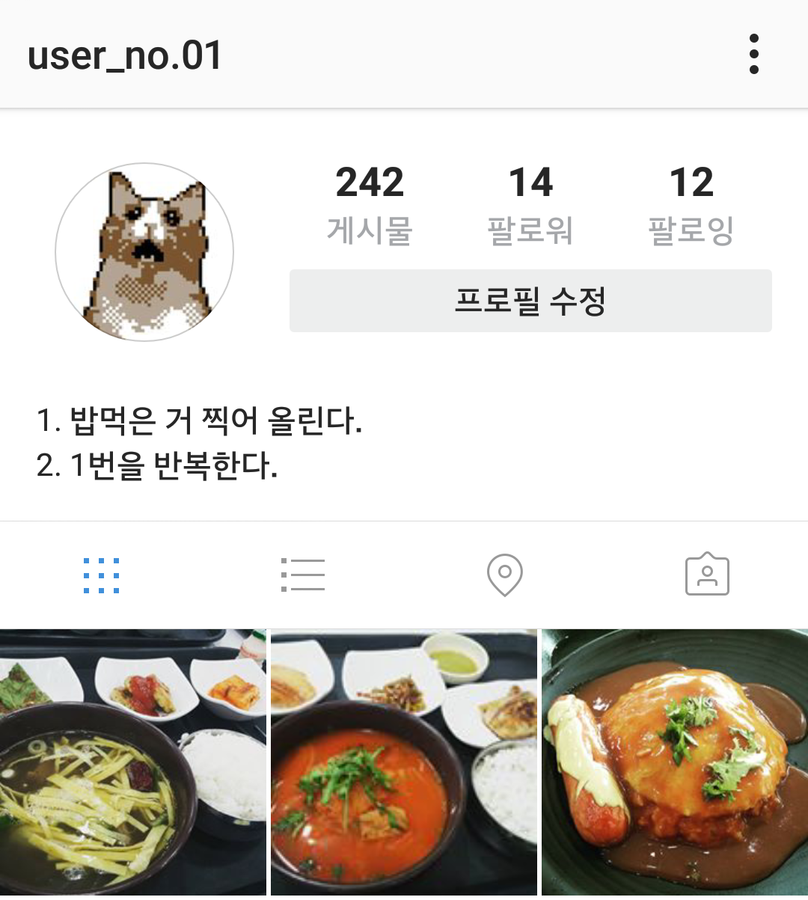

nature_people여행
- 기념품은 감귤 초콜렛
- 해발 1,000 m 이상인 땅 밟기.
- 실은 등산 싫어함
- 해발 5,000 m 이상인 땅 밟기.
- 있긴 한 건가?
- 해발 10,000 m 이상인 땅 밟기.
- 대기권 돌파
- 우주 여행.
기념품은 감귤 초콜렛
일단 1,947 m 높이의 한라산 백록담 찍음.
있긴 한 건가?
없었다... 에베레스트 높이가 해발 8848 m.
- 여권도 없는 나애 우울한 인생애 무슨 볼일이시조?
- 여권 만들고 첫 번째 해외여행 다녀오기.
- !nameless
- 다음 국가 여행.
-
- 미국
-
- 영국
-
- 프랑스
-
- 이탈리아
-
- 일본
-
- 중국
-
- 호주
-
- 러시아
-
- 뉴질랜드
-
- 캐나다
-
- 브라질
-
여권도 없는 나애 우울한 인생애 무슨 볼일이시조?
- 거리의 화가
- 여행지에서 사진 대신 그림 그려서 추억 남기기.
위 사진과 이 웹페이지를 참고하자.
- !nameless
- 바닥이 비치는 바닷물에서 놀아보기.
제주도에도 있다고 카더라.
- 왜때문에 자전이죠? 내가 패달질을 계속 해야하는데?
- 자전거 여행하기.2014.12.29.
- 왜때문에 엉덩이가 아프죠? 여행하는 것 뿐인데?
- 자전거로 4대강 종주하기.2015.03.12.
-
- 한강
2015.03.08. -
- 금강
2015.03.02. -
- 영산강
2015.01.03. -
- 낙동강
2015.03.12.
-
- 왜때문에 허벅지가 아프죠? 여행하는 것 뿐인데?
- 자전거로 633 km 국토종주.2015.03.12.
- なぜので、自転ですか？
- 후쿠오카에서 도쿄까지 자전거로 일주하기.
- 미지와의 조우
- 은하수 보기.
- 우주보다 가까운 곳에
- 오로라 관측하기.
- 의외로 가까운 곳에
- 심해 탐측하기.
일단 광해지도랑 별자리표 찾아놨다.
- 모비딕
- 배 위에서 고래 보기.
- 버스킹
- 시내버스를 갈아타면서 서울에서 부산까지 일주하기.
강원도랑 전라도 도시 하나씩 찍고가면 추가점수 인정.
- 교통 수단: 도로
- 다음의 도로 교통 수단 타기.
-
- 자전거
-
- 오토바이
-
- 자동차
-
- 교통 수단: 철도
- 다음의 철도 교통 수단 타기.
-
- 지하철
-
- 모노레일
-
- 기차
-
- 고속철도
-
- 케이블카
-
- 교통 수단: 해상
- 다음의 해상 교통 수단 타기.
-
- 돛단배
-
- 여객선
-
- 유람선
-
- 화물선
-
- 유조선
-
- 교통 수단: 항공
- 다음의 항공 교통 수단 타기.
-
- 열기구
-
- 비행선
-
- 헬리콥터
-
- 여객기
-
- 퍼스트 클래스
- 비행기 일등석 타기.
- !nameless
- 고층 건물 100층 이상 오르기.
잠실에 있는 롯데월드타워가 지상 123층이라고 한다.
restaurant음식
- 산해진미
- 비싼 요리 먹기.
-
- 바닷가재
-
- 철갑상어 알
-
- 송로버섯
-
- 거위 간
-
- 15번 테이블 순대국밥 단 하나!
- 다음 레벨의 혼밥을 부끄러워하지 않고 끝마치기.
-
- 레벨1: 편의점
-
- 레벨2: 선불식당, 푸드코트
-
- 레벨3: 분식집
-
- 레벨4: 패스트푸드점
-
- 레벨5: 중국집, 냉면집
-
- 레벨6: 일식집, 전문요리점
-
- 레벨7: 패밀리 레스토랑
-
- 레벨8: 고깃집
-
- 레벨9: 술집
-
- 레벨10: 남의 집
-
곰곰히 생각해보니... 예전에 무한리필 고깃집에 혼자 갔던 적 있음. 지금은 못 갈 듯. 점차 퇴보하는 자신감...
- 아악!
- 기억 잃을 때까지 술 마시기.
술은 넘나 맛없고 비싸서 내 의지로 달성되는 일은 없을 것 같다...
- 줘봐 따줄게
- 병따개 없이 맥주병 따는 법 익히기.
약간 아저씨스럽긴 하지만 멋있어 보여서 배워봤다.
- !nameless
- 셰프처럼 사과 깎기.
이 영상처럼 멋지게 깎아보자.
- 치느님 영접
- 전국 각지의 이름난 치킨집 10군데 이상 순례하기.
-
- 부여 시골통닭
-
- 광주 양동통닭
-
- 제주 백양닭집
-
- 부산 거인통닭
-
- 대구 뉴욕통닭
-
- 순천 풍미통닭
-
- 조치원 신흥파닭
-
- 의성 삼미마늘닭
-
- 원주 진미통닭
-
- #먹스타그램
- 한 달간 음식 사진을 찍어 식단 기록하기.2016.01.25.
- #냠스타그램
- 위 항목을 일 년 동안 반복하기.
이 인스타그램 계정에서 진행정도를 볼 수 있음.
- 면식수햏
- 한 달 동안 주식으로 면요리 섭취 후 인증 남기기.2016.07.01.
- 묵면권 행사
- 면식수햏 후 한 달 동안 라면 안 먹기.2016.08.03.
면식수햏의 결과를 담은 글은 그 가치를 인정받아 초개념갤러리에 등록되었다.
- 면식수햏은 끝나지 않는다
- 세계의 면 요리 맛보기.
-
- 일본 라면
-
- 일본 우동
-
- 베트남 쌀국수
-
- 중국 짜장면
-
- 중국 짬뽕
-
- 한국 칼국수
-
- 이탈리아 파스타
-
최소 전문요리점에서 먹어야 인정.
touch_app기타
- 나도 영화 봤거든?
- 세상에서 가장 아름다운 소녀에게 키스하기.
영화에서는 의절했던 딸과 재회하고 손녀의 뺨에 키스한다.
- 비상 사태 발생!
- 뒷면 사진에 나온 거 당겨보기.2016.09.02.
화학회사에서 인턴하면서 몰래 당겨봄.
(사진은 대학교 실험실 복도에서 찍어놓음)
- 라면 먹고 갈래?
- 자취하기.2011.09.
항상 해보고 싶었음.
- 휴식 하면 이거지
- 해먹 갖기. 그리고 해먹 안에서 격렬하게 아무것도 하지 않아보기.
- 싫은데?
- 사회적 통념을 거스르는 행위 하기.2013.01.04.


휴... 나란 남자... 넘나 나쁜 남자인 것!
- 그럼 그렇지...
- 멋진 크리스마스 보내기.2015.12.25.
위 크리스마마스 트리를 만들고 자괴감이 들었다고 한다.
- 야수 길들이기
- "야수를 길들여 친구로 만듭니다."
위 개시끼에게 손바닥을 뚫리면서 처참하게 실패.
- 자, 이제 시작이야 (내 꿈을)
- 포켓몬 마스터 되기.
- 추락하는 것은 날개가 없다?
- 죽지 않고 65미터 떨어지기.
- 서울말은 끝말만 올리면 되는 거 모르니↗
- 서울에서 1년간 살기.2016.06.01.
- 내일 지구의 종말이 온다 할지라도
- 나는 오늘 한그루의 사과나무를 심겠다.